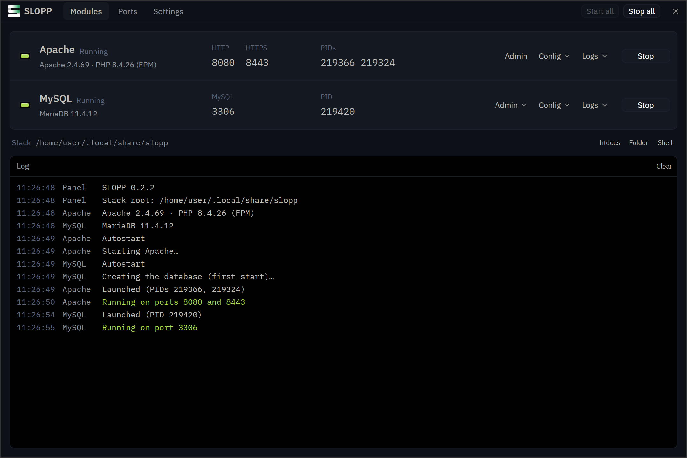
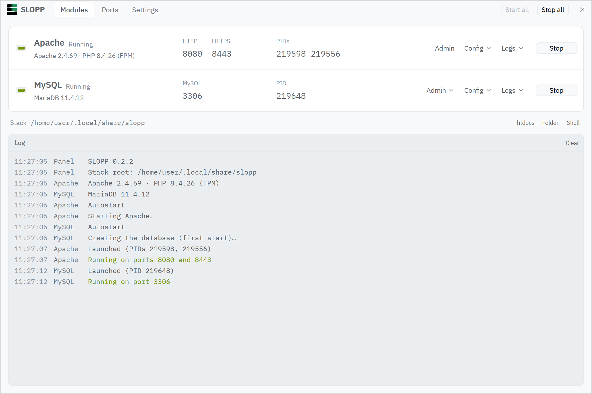

Apache, PHP and MariaDB, run from one panel.
SLOPP is an XAMPP-style control panel, rewritten in Rust with a native GPUI interface, for Linux, macOS and Windows. It runs the stock servers your system already has, keeps the whole stack in one folder, and shows what's listening on which port.
Apache and MySQL are stopped
Click a unit to start or stop it, as in the tray icon.


Two modules, like XAMPP
Apache and MySQL, the same pair XAMPP ships, without Tomcat, FTP or mail. SLOPP doesn't bundle the servers: it finds the ones you installed, on PATH and in the usual places, and Settings takes explicit paths. Ports default to XAMPP's 80, 443 and 3306, or 8080 and 8443 where your user can't use low ports.
Apache
Apache httpd, with PHP through PHP-FPM, or mod_php where PHP has an Apache module
- HTTP
- 80
- HTTPS
- 443
MySQL
MariaDB with a database created on its first start
- MySQL
- 3306
Admin
phpMyAdmin or Adminer downloaded when you ask for it, served by Apache
- Path
- /phpmyadmin/
What the panel does
- Starts and stops each server
- One button per module, with its ports, PIDs and a log of what happened. Config errors show up with line numbers before Apache starts.
- Leaves your config alone
- Config files are written once and never overwritten. Ports and paths go on the command line at start, so changing a port doesn't touch your edits.
- Finds port conflicts
- The Ports page shows which program holds 80, 443 and 3306, so you know why a server won't start before you go looking.
- Lives in the tray
- The icon's lamps show what's running: the top one is Apache, the middle one MySQL. Its menu starts and stops modules and opens the site.
- Keeps servers running
- Close the panel and your site stays up, as with XAMPP. Settings can stop everything on quit instead.
- Written in Rust
- One native program, drawn on the GPU by GPUI, the UI framework behind the Zed editor. No Electron and no web view.
Install
Install the servers first, then SLOPP. The builds aren't signed, so your system may warn the first time you open one.
Linux
x86_64, glibc 2.39 or newer
- Install Apache, PHP-FPM and MariaDB with your package manager. On Debian and Ubuntu:
sudo apt install apache2 php-fpm \ php-mysql mariadb-server
- Make the AppImage executable and run it. It adds itself to your applications.
On NixOS, the flake brings the servers too:
nix run github:gabors0/slopp
macOS
Apple silicon
- Install PHP and MariaDB with Homebrew. Apache comes with macOS; Homebrew's
httpdgets a newer one that runs PHP as mod_php.brew install php mariadb
- Open the disk image and drag SLOPP to Applications.
- The app isn't notarized: allow it in System Settings, Privacy & Security, or run
xattr -dr com.apple.quarantine \ /Applications/SLOPP.app
Windows
x86_64, Windows 10 or newer. New, so expect rough edges.
- Run the setup. It installs for your user, without admin rights.
- Click Install on a module whose servers are missing. SLOPP gets them with winget: Apache Lounge's Apache, PHP's Thread Safe build and MariaDB.
- If SmartScreen warns, choose More info, then Run anyway.
An existing XAMPP's Apache, PHP and MariaDB work too.
Everything in one folder
Laid out like XAMPP's, in ~/.local/share/slopp (%LOCALAPPDATA%\slopp on Windows). Put your sites in htdocs.
htdocs/ your sites apache/conf/ httpd.conf and extras apache/logs/ error.log, access.log php/php.ini mysql/my.cnf mysql/data/ the databases phpMyAdmin/ once you get it adminer/ once you get it
Or from a terminal
sloppctl is the counterpart of XAMPP's lampp script, and works on the same stack as the panel.
sloppctl start [apache|mysql] sloppctl stop [apache|mysql] sloppctl restart [apache|mysql] sloppctl status sloppctl ports who listens where sloppctl paths the stack and programs sloppctl install-phpmyadmin sloppctl install-adminer